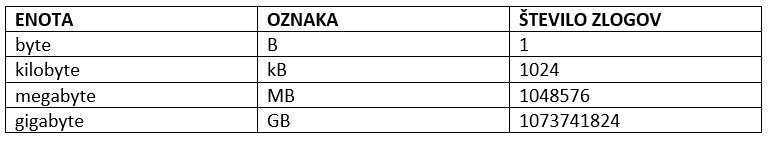

Strojna oprema računalnika

Vsako črko besede, ki jo odtipkaš na tipkovnici, si mora računalnik zapomniti, dokler mu ne sporočiš, kaj naj stori z njo: jo shrani kot besedilo, izvrši kot ukaz ali kaj drugega. Vse podatke, ki jih računalniku posredujejo vhodne enote, računalnik najprej shrani v pomnilno enoto.
V pomnilnih enotah pa niso le tisti podatki, ki si jih pravkar vnesel v računalnik. V njih je shranjeno vse, kar mora računalnik vedeti: kako naj izvrši kak ukaz, katere podatke naj pri tem uporabi in seveda tudi podatki sami. Pomnilne enote so torej nekakšen spomin računalnika.Brez teh enot računalnik ne bi bil sposoben narediti ničesar.
Kot že veš, pošiljajo vhodne enote proti računalniku vse podatke, zapisane z nizi 0 in 1. Ko hoče računalnik prebrati podatek iz pomnilnika, mora ugotoviti le, ali ima na določenem mestu zapisano 0 ali 1. To je tudi najmanjša enota, s katero merimo velikost pomnilnika. Imenujemo jo bit. Ker je zelo majhna, raje uporabljamo večjo enoto, sestavljeno iz osmih bitov. Imenujemo jo bajt (angleško Byte).
V pomnilnik velik 1 Byte, lahko zapišemo eno črko, eno številko, eno piko, v 1 kilobyte lahko zapišemo malo manj kot pol strani besedila, v Megabyte pa lahko shranimo kar 500 strani, a le eno pol zaslona veliko sliko. V Gigabyte pa lahko shranimo kar 200 m knjig.
Glede na hitrost dostopa so nekatere enote zelo hitre, druge pa manj. Seveda bi želel imeti v računalniku le najhitrejše pomnilne enote. Da bi delo z računalnikom potekalo čim hitreje, računalnik med svojim delom podatke neposredno zapisuje in bere le iz najhitrejših enot. V praksi jih imenujemo notranji pomnilnik ali kar pomnilnik. Če bi lahko pogledal v pomnilnik računalnika, bi ugotovil, da je v njem vse zelo lepo urejeno. Podoben je veliki omari s predali. Vsak predal ima svoj naslov, v njem pa je shranjen samo en podatek. Ko želi računalnik uporabiti kak podatek, mora najprej poznati naslov predala, v katerem je podatek. Nato pogleda v predal in v njem shranjeni podatek uporabi.
Podatke iz manj hitrih enot računalnik prenese v pomnilnik, nato pa jih uporabi. Te enote imenujemo zunanji pomnilnik. Če bi imel računalnik vse podatke shranjene le v notranjem pomnilniku, bi moral biti nenehno vključen. Ker to ni niti praktično niti varčno, ima računalnik pomnilne enote, na katere lahko podatek zapišeš ali ga iz njih prebereš, ko pa zmanjka elektrike pa ti podatki ostanejo na njih še vedno zapisani. Takšne enote imenujemo zunanji pomnilnik računalnika. Izveden je v obliki diskov, disket, CD-jev, DVD-jev in vedno bolj popularnih USB ključev.